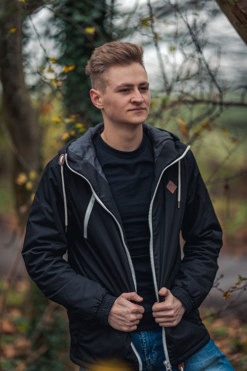

Why choose us?

What sets us apart is our unwavering commitment to providing a truly unique and tailored online presence. With 100% customizability, we precisely craft each website line by line, ensuring it reflects the essence of your brand. Beyond aesthetics, our focus on speed and efficiency results in websites that not only load faster but are also lighter, optimizing the user experience, especially on mobile devices. Our in-house professional photography services add another layer of distinction, capturing your business in its best light.
Meet the team
Mantas
I am a seasoned full-stack developer with a rich background that began as a hobby at the age of 14.
Fueling my passion for web development, I pursued and completed a bachelor's degree in software engineering, marking the formal commencement of my professional journey. With a decade of experience in website development, I bring a dedicated and enthusiastic approach to every project.
My commitment extends beyond conventional education, as I continually enhance my skills through participation in bootcamps, crash courses, and engaging in server-side projects.
Driven by exceptionally high standards, I consistently strive to achieve the most efficient and effective code, reflecting my unwavering commitment to delivering top-notch solutions in the dynamic realm of web development.
Mati
With more than 8 years of programming experience, I served as a Lead Software Engineer at Siemens for over 4 years. My tenure at Siemens provided me with extensive expertise, and my fervour for programming has only intensified over the years.
Although I have moved on from Siemens, I am committed to leveraging my skills to assist business owners in their growth journey and elevate their enterprises to new heights. My wealth of experience allows me to navigate the intricacies of programming seamlessly, ensuring tailored solutions that align with the unique needs of each business.
Beyond my role in software development, I am also a seasoned photographer with over 10 years of experience using professional cameras. This dual expertise uniquely positions me to offer a comprehensive perspective on website development.
The fusion of photography and software engineering allows me to not only craft efficient and visually appealing websites but also to understand how each element contributes to the overall user experience. I am excited to bring this distinctive blend of skills to help businesses thrive in the digital landscape.